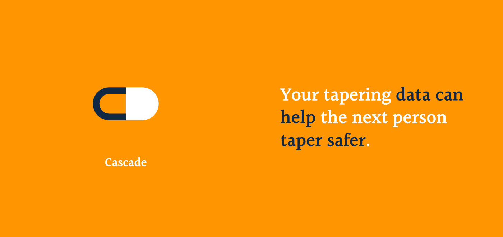

alysa
designer · developer · artist
seattle, wa
Hi, I’m Alysa! A student at University of Washington, a designer, developer, and artist. I love coming up with unique and beautiful solutions to problems.
Hi, I’m Alysa! A student at University of Washington, a designer, developer, and artist. I love coming up with unique and beautiful solutions to problems.
Recent work
A citizen-science platform for safely tapering off psychiatric medication.
